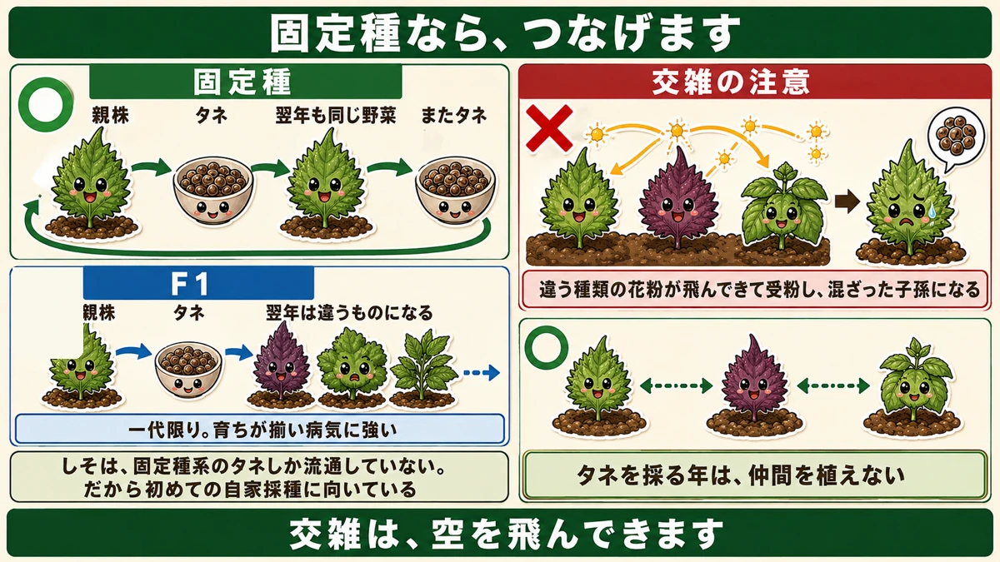
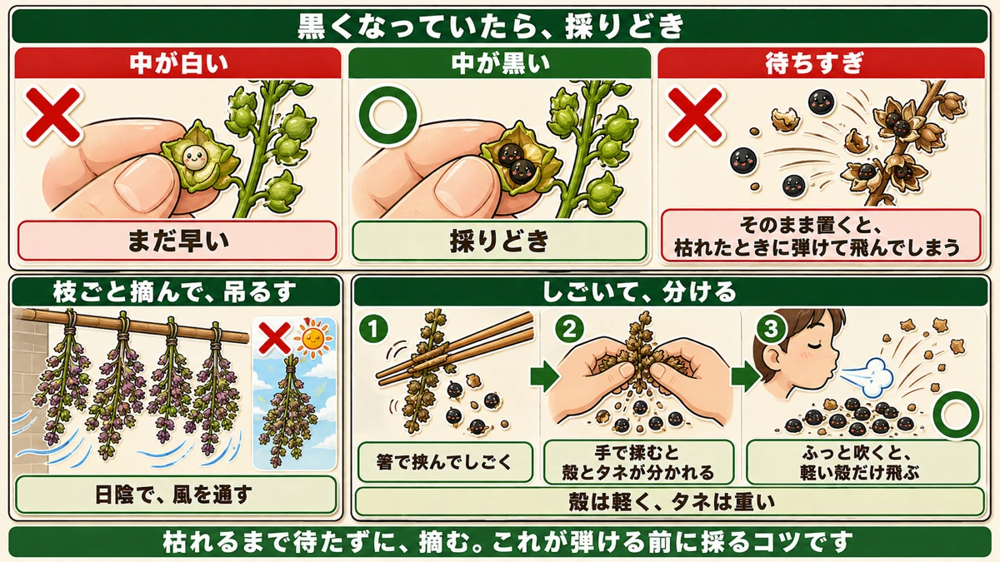
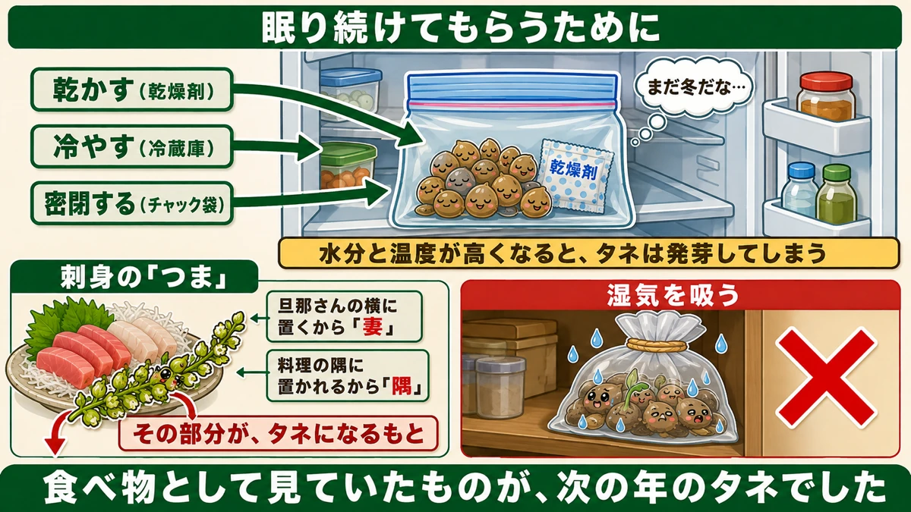

つぶを1つ潰してみてください🌱 黒くなっていたら、採りどきです

🌱「毎年タネを買っている」
🌱「いつ採ればいいのか分からない」
🌱「採ったタネから、変なものができた」
どうも、8150（えいこう）です🌱 家庭菜園歴8年、理科の教員免許を持っていて、有機・無農薬で野菜を育てています。
今日は、★タネを買わなくなる話です。
先に、この記事でいちばん言いたいことを言っておきます。
★穂のつぶを1つ潰してみてください。★中が黒くなっていたら、採りどきです。
判断は、これだけです☺️
★★固定種なら、つなげます
前にお話ししたことの、実践編です
タネ袋の記事で、こういう話をしました。
★固定種 … 昔からある品種。★自分でタネを採って、来年もまける
★F1 … かけ合わせて作った一代限りの品種。★育ちが揃い、病気に強いものが多い

★どちらが正しいということはなく、目的が違うだけ。そうお伝えしました。
★今日は、その「タネを採る」ほうの話です。
★しそは、全部が固定種です
いちばん始めやすいのが、しそです。
理由があります。
★しそは、昔から栽培されてきた固定種系のタネしか流通していません。
つまり★F1を買ってしまう心配がありません。
★「採ったタネから、次の世代が変なものになる」ということが起きない。★初めての自家採種に、いちばん向いています。
毎年、勝手に生えてきます
しそを育てたことがある方なら、心当たりがあると思います。
★去年植えた場所から、今年も勝手に生えてくる。
★あれは、こぼれたタネが自分で発芽しているんです。
★もともと、タネでつながる力の強い植物です。
★★交雑に、注意してください
ここがいちばんの落とし穴です
ただし、注意点があります。
★しそには、いくつか仲間がいます。
- ★青じそ
- ★赤じそ
- ★エゴマ（しその仲間です）
★★近くにあると、混ざります
これらを近くに植えていると、どうなるか。
★違う種類の花粉が飛んできて受粉し、混ざった子孫になります。
これを★交雑（こうざつ）と言います。
★見た目は青じそなのに、味がエゴマに近い。★そういうことが起きます。
実際にあった話
私が読んだ資料に、こういう話がありました。
★「どうも、しそというよりエゴマに近い味だな」と思っていたら、近くにエゴマを植えていたのを忘れていた。
★これはこれで面白いのですが、狙ってやったのでなければ、ただの失敗です。
★★対策は「離す」
やることは1つです。
★タネを採るなら、同じ仲間を離して植えてください。
前にコンパニオンプランツの記事で、こうお伝えしました。
★玉ねぎとマメ科は、隣のうねでもだめ。離す。
★あれは地下の話でしたが、★交雑は空を飛んできます。★もっと離す必要があります。
★青じそのタネを採ると決めたら、その年は赤じそもエゴマも植えない。それがいちばん確実です。
★★採りどきの見分け方
待ちすぎては、いけません
多くの方が、こう考えます。
★「花が咲いて、枯れるまで待とう」
★これだと、遅いです。

★★弾けてしまいます
理由があります。
★そのまま置いておくと、枯れたときにタネが弾けて飛んでしまいます。
植物としては正しい行動です。★遠くへタネを飛ばして、子孫を広げようとしている。
でも、こちらは困ります。★気づいたときには、地面に落ちています。
★★つぶを1つ、潰してみる
そこで、判断の方法です。
★花が終わったあと、穂につぶつぶができます。
★そのつぶを1つ、指で潰してみてください。
- ★中が白い → ★まだ早い
- ★★中が黒い → ★採りどきです
★これだけです。難しい判断は要りません。
★黒ければ、摘み取る
黒くなっていたら、★枝ごと摘み取ってください。
★枯れるまで待たずに、摘む。★これが弾ける前に採るコツです。
採り方、2つ
★方法1：吊るして、追熟させる
摘み取ったあとです。
★風通しのいい日陰に吊るして、追熟させます。
- ★タネの部分を乾燥させる
- ★摘んだあとも、タネは中で熟していきます
前にかぼちゃの記事で、追熟の話をしました。★タネも同じで、摘んでからも仕上がります。
★日なたに干さないでください。★日陰で、風を通す。前にじゃがいもや玉ねぎの保存でお伝えしたのと同じです。
★方法2：しごいて、分ける
もう1つの方法です。
穂が★カラカラになって、茶色くなったら。
- ★箸などで挟んで、しごくように取る
- ★★手で揉むと、殻とタネが分かれます
★★殻とタネを、分ける
分けた後、殻とタネが混ざっています。★2つの方法があります。
★方法A：ふるいにかける
目の細かいふるいで、殻を落とします。
★方法B：★吹いて飛ばす
★これが簡単です。
★殻は軽く、タネは重い。だから★ふっと息を吹きかけると、殻だけが飛んでいきます。
★下に残ったのが、タネです。
★昔からある、道具の要らない方法です。
★保存のしかた
タネ袋の記事と、同じです
採ったタネの保存です。前にお話ししたことと、まったく同じになります。
★1. チャック付きの袋に入れる
★2. ★乾燥剤を一緒に入れる
★3. ★冷蔵庫で保管する

★★なぜ、この3つなのか
理由も同じです。
★水分と温度が高くなると、タネは発芽してしまいます。
タネは眠っています。★起きる条件は、水と温度です。
だから★乾かして、冷やして、密閉する。★眠り続けてもらうための3つです。
前にタネ袋の記事で、こうお伝えしました。
★暗くて、乾いていて、寒い。タネにとっては「まだ冬が続いている」状態。
★自分で採ったタネも、まったく同じ扱いです。
★来年まで、もちます
この方法なら、★来年まで完璧な状態で保存できます。
前に「★余ったタネは1年はもつ」とお伝えしました。★自家採種のタネも同じです。
★毎年採って、毎年まく。それで循環します。
ひとつ、豆知識
刺身の「つま」
しそのタネを採るとき、使う部分があります。
★刺身に添えられている、あの穂です。
★「つま」と呼ばれますよね。
語源には、2つの説があります
面白い話を知りました。★「つま」の語源には、2つの説があるそうです。
★説1：旦那さんの横に置くから「妻」
★説2：料理の隅に置かれるから「隅（つま）」
★どちらが本当なのかは分かりません。でもどちらも、それらしく聞こえます。
★そこが、タネになる部分です
そして大事なのは、ここです。
★刺身のつまとして食べているあの部分が、そのままタネになる部分です。
★食べ物として見ていたものが、次の年のタネだった。
★野菜を育てていると、こういう発見がときどきあります。前に「枝豆と大豆は同じ植物」という話もしました。★同じものを、違う時期に、違う名前で呼んでいるだけです。
買わなくなる、ということ
★1袋から、ずっと続きます
自家採種のいいところは、★お金だけではありません。
★毎年、自分の畑で採れたタネをまく。
そのタネは、★その畑の環境で育った株から採れたものです。
年を重ねるほど、★その土地に合ったタネになっていく、と言われています。
★まずは、しそから
いきなり全部の野菜でやる必要はありません。
★しそは、固定種しか流通していないので失敗がない。★交雑にだけ気をつければいい。
★1種類から始めてみてください。
この記事の要点
まとめ
- ★★固定種なら、タネを採って来年もまける
- ★しそは、固定種系のタネしか流通していない。★初めての自家採種に向いている
- ★毎年勝手に生えてくるのは、こぼれたタネが発芽しているから
- ★★交雑に注意。★青じそ・赤じそ・エゴマは仲間
- ★近くにあると花粉が飛んで、混ざった子孫になる
- ★見た目は青じそなのに、味がエゴマに近い、ということが起きる
- ★★対策は「離す」。★タネを採る年は、仲間を植えない
- ★枯れるまで待つと、★タネが弾けて飛んでしまう
- ★★穂のつぶを1つ潰して、★中が黒ければ採りどき（白ければまだ早い）
- ★黒くなっていたら、枝ごと摘み取る
- ★風通しのいい日陰に吊るして追熟させる。★日なたに干さない
- ★カラカラになったら、箸などでしごいて取る
- ★手で揉むと、殻とタネが分かれる
- ★★殻は軽いので、吹くと飛ぶ。★下に残ったのがタネ
- 保存は★チャック袋＋乾燥剤＋冷蔵庫
- ★水分と温度が高くなるとタネは発芽してしまう
- ★乾かして、冷やして、密閉する。★眠り続けてもらうため
- ★この方法なら来年まで保存できる
- ★刺身の「つま」の語源は2説（妻／隅）。★その部分がタネになるもと
- ★食べ物として見ていたものが、次の年のタネだった
- ★年を重ねるほど、その土地に合ったタネになっていくと言われる
全部やろうとしなくて大丈夫です。まずはしその穂を1つ、指で潰してみてください。★黒ければ、今年の分はもう採れます🌱
次回は、ぼかし肥料の話。落ち葉と米ぬかで、肥料を自分で作ります🍂
ここまで読んでくださって、ありがとうございました。
乾燥剤
採ったタネは、しっかり乾かしてから密閉します。湿気が残ると翌年芽が出ません。
![[商品価格に関しましては、リンクが作成された時点と現時点で情報が変更されている場合がございます。]](https://hbb.afl.rakuten.co.jp/hgb/56eb9618.3f325504.56eb9619.e861bcb7/?me_id=1358935&item_id=10000079&pc=https%3A%2F%2Fthumbnail.image.rakuten.co.jp%2F%400_mall%2Fhw-enable%2Fcabinet%2Fsilicagel%2Ffujigel%2F10gn.jpg%3F_ex%3D240x240&s=240x240&t=picttext "[商品価格に関しましては、リンクが作成された時点と現時点で情報が変更されている場合がございます。]")

ジッパー保存袋
乾燥剤と一緒に入れて、冷暗所へ。品種名と採った日を書いておいてください。
![[商品価格に関しましては、リンクが作成された時点と現時点で情報が変更されている場合がございます。]](https://hbb.afl.rakuten.co.jp/hgb/56eb9768.493f3421.56eb9769.0365e053/?me_id=1228244&item_id=10000759&pc=https%3A%2F%2Fthumbnail.image.rakuten.co.jp%2F%400_mall%2Fluxfort%2Fcabinet%2Fgtg2%2Fxp-13_w.jpg%3F_ex%3D240x240&s=240x240&t=picttext "[商品価格に関しましては、リンクが作成された時点と現時点で情報が変更されている場合がございます。]")
金町小カブ（固定種）
固定種なので、タネを採って来年もまけます。はじめの1つにおすすめです。
![[商品価格に関しましては、リンクが作成された時点と現時点で情報が変更されている場合がございます。]](https://hbb.afl.rakuten.co.jp/hgb/56e76943.db126f41.56e76944.bd847f20/?me_id=1270580&item_id=10012182&pc=https%3A%2F%2Fthumbnail.image.rakuten.co.jp%2F%400_mall%2Ftekutekushop%2Fcabinet%2Fseed%2Fhn130050.jpg%3F_ex%3D240x240&s=240x240&t=picttext "[商品価格に関しましては、リンクが作成された時点と現時点で情報が変更されている場合がございます。]")
しゃもじ小松菜（固定種）
同じアブラナ科が近くにあると交雑します。採種する年は1種類に絞ってください。
![[商品価格に関しましては、リンクが作成された時点と現時点で情報が変更されている場合がございます。]](https://hbb.afl.rakuten.co.jp/hgb/56e76943.db126f41.56e76944.bd847f20/?me_id=1270580&item_id=10012154&pc=https%3A%2F%2Fthumbnail.image.rakuten.co.jp%2F%400_mall%2Ftekutekushop%2Fcabinet%2Fseed%2Fhn063.jpg%3F_ex%3D240x240&s=240x240&t=picttext "[商品価格に関しましては、リンクが作成された時点と現時点で情報が変更されている場合がございます。]")
あわせて読みたい